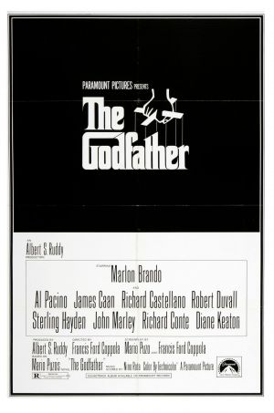

A mythic and emotionally charged hero's journey, "Dune" tells the story of Paul Atreides, a brilliant and gifted young man born into a great destiny beyond his understanding, who must travel to the most dangerous planet in the universe to ensure the future of his family and his people. As malevolent forces explode into conflict over the planet's exclusive supply of the most precious resource in existence-a commodity capable of unlocking humanity's greatest potential-only those who can conquer their fear will survive.
.jpg)
The Godfather "Don" Vito Corleone is the head of the Corleone mafia family in New York. He is at the event of his daughter's wedding. Michael, Vito's youngest son and a decorated WW II Marine is also present at the wedding. Michael seems to be uninterested in being a part of the family business. Vito is a powerful man, and is kind to all those who give him respect but is ruthless against those who do not. But when a powerful and treacherous rival wants to sell drugs and needs the Don's influence for the same, Vito refuses to do it. What follows is a clash between Vito's fading old values and the new ways which may cause Michael to do the thing he was most reluctant in doing and wage a mob war against all the other mafia families which could tear the Corleone family apart.
J. Robert Oppenheimer, the creator of The Atomic Bomb, is put on trial for his supposed communist ties in the past, all while coming to terms with what it meant to change the history of the world for the sake of winning World War Two. This is the story of how America's Prometheus was cast out by The Gods for giving mankind an unthinkable gift: power unlike any other, the power to destroy the world; the power of Olympus.
.jpg)